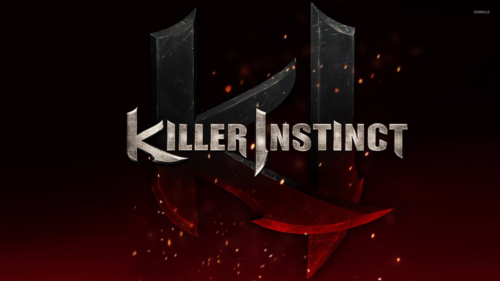

KILLER INSTINCT
El primer juego llega a las salas arcade con combates y combos característicos.
Un viaje desde los salones arcade hasta el regreso de una franquicia emblemática.
VER CRONOLOGÍA ↓Killer Instinct debutó en 1994, desarrollado originalmente por Rare. Su universo une ciencia ficción, artes marciales, criaturas extraordinarias y el torneo impulsado por la corporación Ultratech.
El sistema de combos, la velocidad de los encuentros y su fuerte personalidad audiovisual lo convirtieron en una franquicia reconocible.
REVISAR LÍNEA DEL TIEMPO ↗
El primer juego llega a las salas arcade con combates y combos característicos.
La segunda entrega expande el universo y presenta nuevos personajes.
La serie regresa con una nueva etapa de combates para Xbox One.
En Killer Instinct, una secuencia puede iniciarse, prolongarse y finalizar mediante movimientos distintos. El rival puede intentar interrumpir ciertos ataques con un Combo Breaker.
| CONCEPTO | FUNCIONAMIENTO GENERAL |
|---|---|
| Opener | Movimiento que da inicio a una secuencia de combo. |
| Auto Double | Golpes automáticos que aparecen después de determinados movimientos. |
| Linker | Movimiento que permite prolongar la secuencia. |
| Ender | Movimiento que remata el combo. |
| Combo Breaker | Acción defensiva que puede interrumpir el combo rival. |